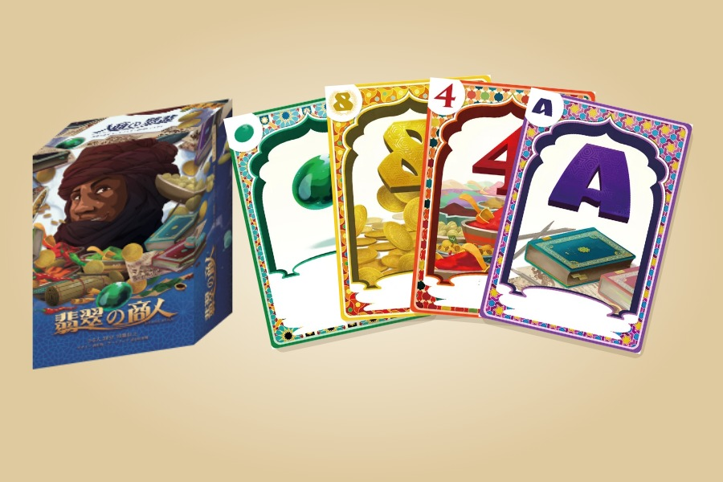

STANDALONE & BOARD GAME ARENA
Jade Stone Merchants
An auction card game, brought to the browser in two editions.
Available as a standalone browser game and a Board Game Arena adaptation. Both preserve the original rules and hand-drawn artwork.
The standalone edition is publicly playable. The BGA edition is now in invitation-only private alpha.
Standalone browser edition
Play against a computer opponent directly in your browser. Publicly available, with no account required.
Board Game Arena edition
Online multiplayer for two to five players, with automatic scoring, spectator support and replays. Deployed to BGA as an invitation-only private alpha; access currently requires an invitation.

What the adaptation includes
- A PHP rules engine with server-side legal-action checks.
- Two to five players, automatic scoring and spectator support.
- Reload recovery, BGA replay controls and native sound settings.
- A responsive board built around the original card artwork.
A shared Preact board serves both editions through separate controllers. A standalone PHP rules engine handles legal moves and scoring; a thin BGA adapter handles persistence, player identity and notifications.
Validation in BGA Studio covered complete games with two to five players, reload recovery, spectator synchronization and replay navigation. The PHP and TypeScript rules engines were compared across 96 complete games, covering 19,632 state, action and event comparisons.
About the game
Two to five players · About 20 minutes
Published by Curiosity Inc. / 株式会社キュリオシティ, 2018
Game design: 西村裕
Artwork: 長谷川登鯉 and Mogwai
Digital adaptation: puniu3 / Curiosity Inc.